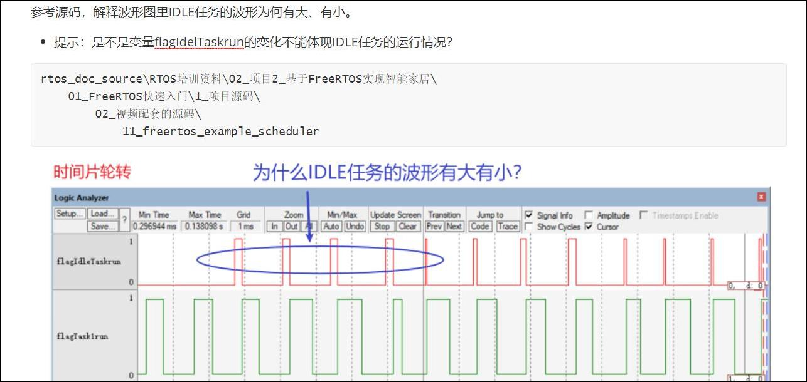

1. 空闲任务和钩子函数
1.1 空闲任务的作用
释放被删除的任务的内存。
1.2 空闲任务的创建
通常情况下，一个良好的任务都是事件驱动的，平时大部分时间处于阻塞状态，当我们所创建的任务都无法运行时，调度器就必须要找到一个可以运行任务来执行，因此程序需要提供一个空闲任务，不用特意创建该任务，空闲任务的创建在vTaskStartScheduler()中创建，启动调度器时，函数内部会创建空闲任务。
- 空闲任务优先级为0：它不能阻碍用户任务运行
- 空闲任务要么处于就绪态，要么处于运行态，永远不会阻塞
空闲任务的优先级为0，这以为着一旦某个用户的任务变为就绪态，那么空闲任务马上被切换出去，让 这个用户任务运行。在这种情况下，我们说用户任务"抢占"(pre-empt)了空闲任务，这是由调度器实现的。
要注意的是：如果使用vTaskDelete()来删除任务，那么你就要确保空闲任务有机会执行，否则就无法释放被删除任务的内存。
/* 启动调度器 */
vTaskStartScheduler();
1.3 空闲任务的举例
在main函数中创建优先级为1的任务1，在任务1中再创建优先级为2的任务2，使其创建后立即抢占开始执行，任务2中调动vTaskDelete函数使任务2自杀，继续执行任务1，任务1继续创建新任务2。这种情景创建一种使得任务1不断创建任务2，并不删除任务2所使用的内存，导致不断的消耗内存，使得内存的堆创建任务失败，程序执行几次之后就因为内存不足报错。

1.4 空闲任务清理自杀任务TCB和栈

1.5 vTaskDelay函数的内存清理
任务的清理工作
- 对于自杀的任务，由看空闲任务进行内存的清理；
- 对于被杀的任务，在vTaskDelete函数内部清理（由凶手调用这个函数，由凶手清理）；
原因在于：自杀的任务，无法清理自己所使用的内存，比如栈、释放栈的函数要哟经到栈，这是矛盾的。
1.5.1 函数原型

当创建任务时，需要分配栈和TCB结构体；
当删除任务时，需要释放栈和TCB结构体；
1.6 钩子函数的概念
我们可以添加一个空闲任务的钩子函数(Idle Task Hook Functions)，空闲任务的循环没执行一次，就会 调用一次钩子函数。
1.7 钩子函数的作用
- 执行一些低优先级的、后台的、需要连续执行的函数
- 测量系统的空闲时间：空闲任务能被执行就意味着所有的高优先级任务都停止了，所以测量空闲任务占据的时间，就可以算出处理器占用率。
- 让系统进入省电模式：空闲任务能被执行就意味着没有重要的事情要做，当然可以进入省电模式了
1.8 钩子函数的限制
- 不能导致空闲任务进入阻塞状态、暂停状态 如果你会使用vTaskDelete()来删除任务，那么钩子函数要非常高效地执行。
- 如果空闲任务移植卡在钩子函数里的话，它就无法释放内存。
1.9 钩子函数的使用
在FreeRTOS\Source\tasks.c中，可以看到如下代码，所以前提就是：
- 把这个宏定义为1：configUSE_IDLE_HOOK
- 实现vApplicationIdleHook函数

2.任务调度算法
2.1 任务四种状态
正在运行的任务，被称为"正在使用处理器"，它处于运行状态。在单处理系统中，任何时间里只能有一 个任务处于运行状态。
非运行状态的任务，它处于这3中状态之一：阻塞(Blocked)、暂停(Suspended)、就绪(Ready)。就绪态的任务，可以被调度器挑选出来切换为运行状态，调度器永远都是挑选最高优先级的就绪态任务并让它进入运行状态。
阻塞状态的任务，它在等待"事件"，当事件发生时任务就会进入就绪状态。
- 等待事件分为两类：时间相关的事件、同步事件。
- 时间相关的事件，就是设置超时时间：在指定时间内阻塞，时间到了就进入就绪 状态。使用时间相关的事件，可以实现周期性的功能、可以实现超时功能。
- 同步事件就是：某个任务在等待某些信息，别的任务或者中断服务程序会给它发送信息。怎么"发送信息"？方法很多，有：任务通 知(task notification)、队列(queue)、事件组(event group)、信号量(semaphoe)、互斥量(mutex)等。 这些方法用来发送同步信息，比如表示某个外设得到了数据。
刚开始所有的任务都在Read状态，然后调度器挑选任务进入Running状态

2.2 调度算法的配置
对于调度算法的配置要从这三个角度开始理解
可否抢占、时间片轮转、空闲任务是否让步
- 可否抢占？高优先级的任务能否优先执行(配置项: configUSE_PREEMPTION)
- 可以：被称作"可抢占调度"(Pre-emptive)，高优先级的就绪任务马上执行，下面再细化。
- 不可以：不能抢就只能协商了，被称作"合作调度模式"(Co-operative Scheduling) ，这种模式下优先级失去意义，无法抢占
- 当前任务执行时，更高优先级的任务就绪了也不能马上运行，只能等待当前任务主动让出CPU资源。
- 其他同优先级的任务也只能等待：更高优先级的任务都不能抢占，平级的更应该老实点
- 可抢占的前提下，同优先级的任务是否轮流执行(配置项：configUSE_TIME_SLICING)
- 轮流执行：被称为"时间片轮转"(Time Slicing)，同优先级的任务轮流执行，你执行一个时间片、我再执行一个时间片 ，在Tick中断中会引起任务切换
- 不轮流执行：英文为"without Time Slicing"，当前任务会一直执行，直到主动放弃、或者被高优先级任务抢占 ，在高优先级任务就绪时会引起任务切换，高优先级不再运行的时候也会
- 不支持时间片轮转时，空闲任务只有在被搞任务抢占或者其他任务自动主动放弃运行时才会运行
- 在"可抢占"+"时间片轮转"的前提下，进一步细化：空闲任务是否让步于用户任务(配置项： configIDLE_SHOULD_YIELD)
- 空闲任务低人一等，每执行一次循环，就看看是否主动让位给用户任务
- 空闲任务跟用户任务一样，大家轮流执行，没有谁更特殊

2.3 问题：为什么打印时，空闲任务的波形有大有小？
为什么IDLE任务的波形有大有小？
task2运行了1个tick，轮到idle任务。
idletask->hook->flagIdleTaskrun=1, 礼让，轮到task1运行，
task1从printf中间继续运行，打印完下一个字符后，才设置flagIdleTaskrun=0，
可以看到，flagIdleTaskrun等于1的时间：在idle任务里，也在task1里，
所以这个变量用来表示任务的运行时间：并不准确。
改成这样就没问题：
现在可以看到了，空闲任务运行的时间非常非常短：